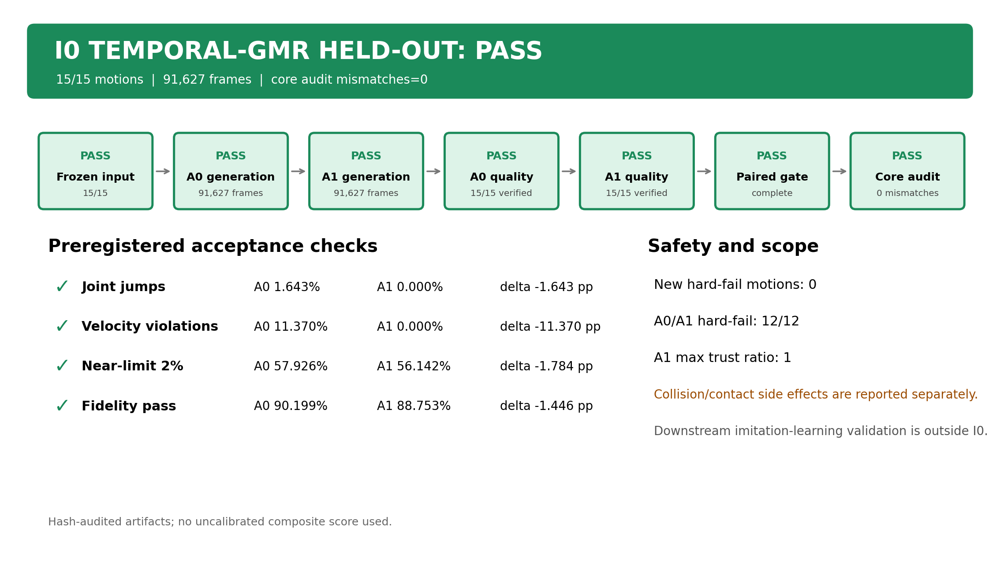
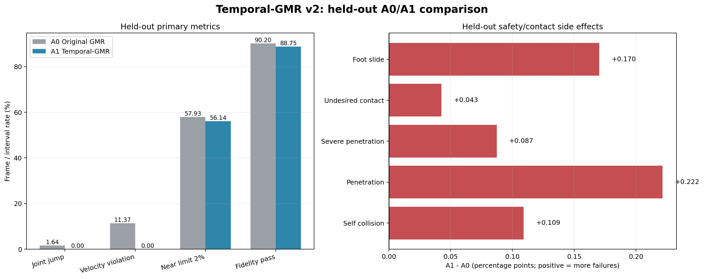
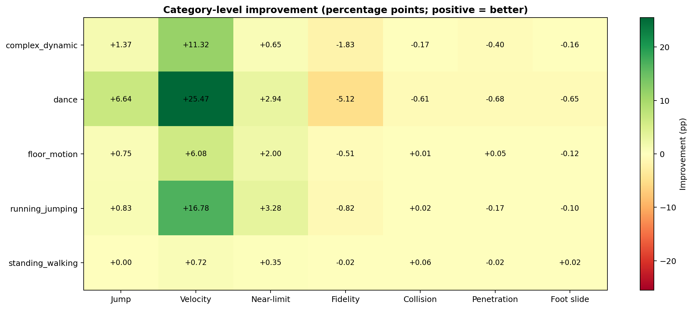
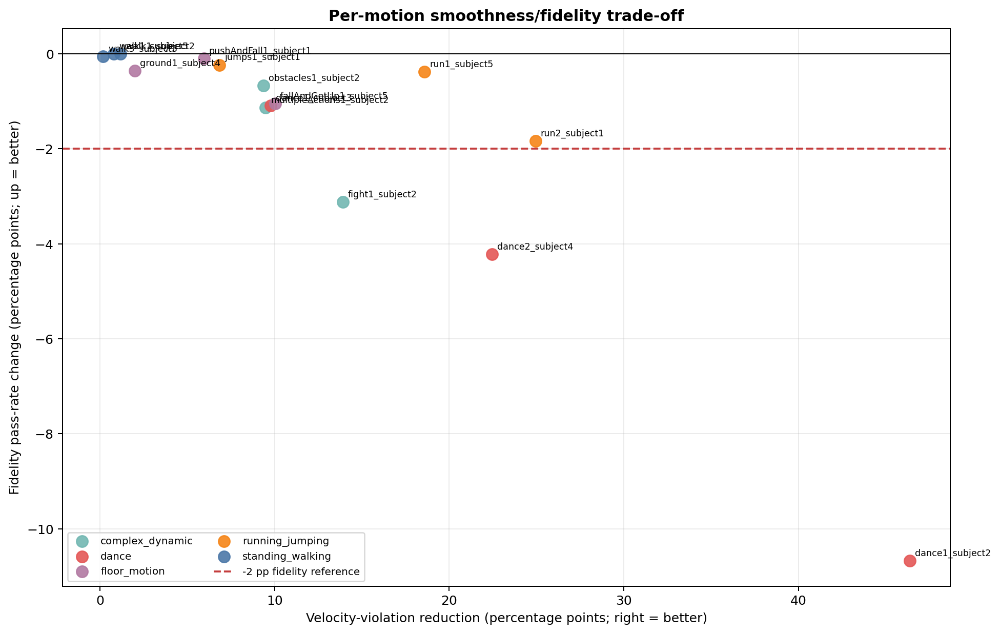
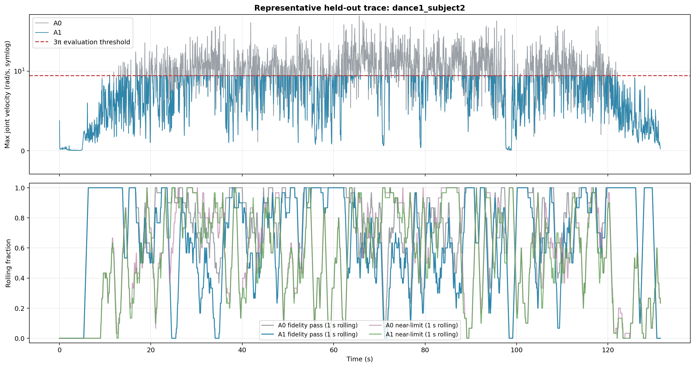

I0 Temporal-GMR Held-out Test
Core audit PASS; held-out gate PASS; 15 motions / 91,627 frames.
01_test_completion_dashboard.png

02_overall_metrics_a0_a1.png

03_category_improvement_heatmap.png

04_motion_tradeoff.png

05_dance1_subject2_timeline.png
